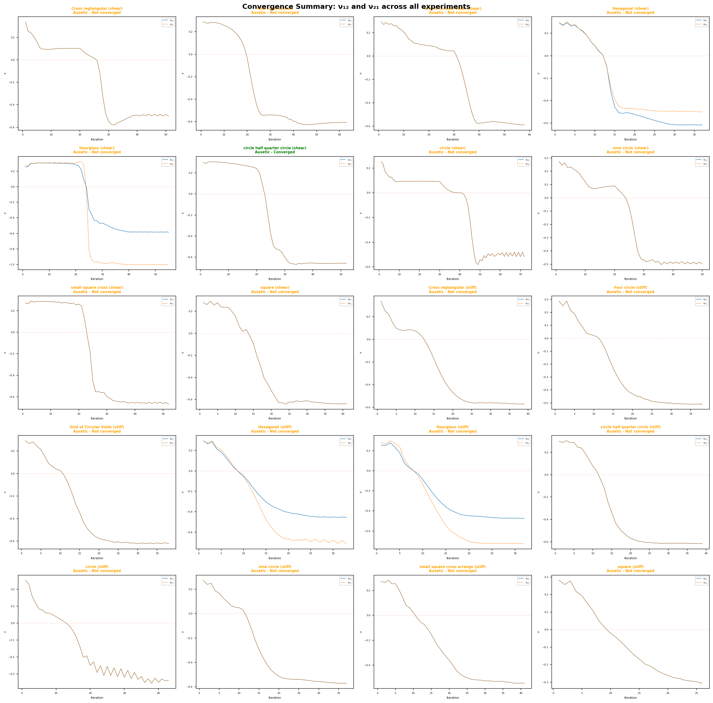
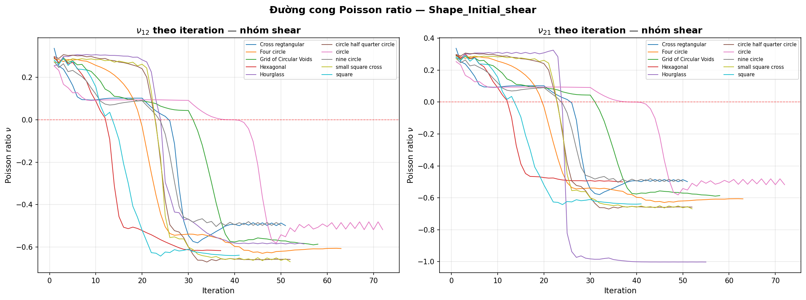
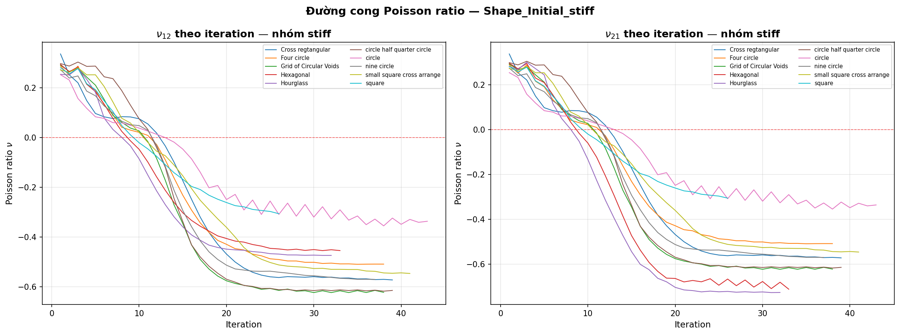
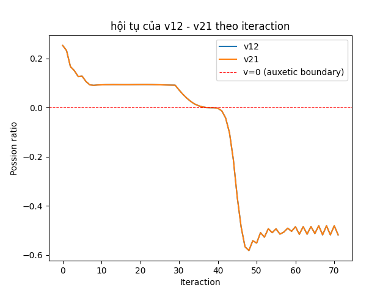
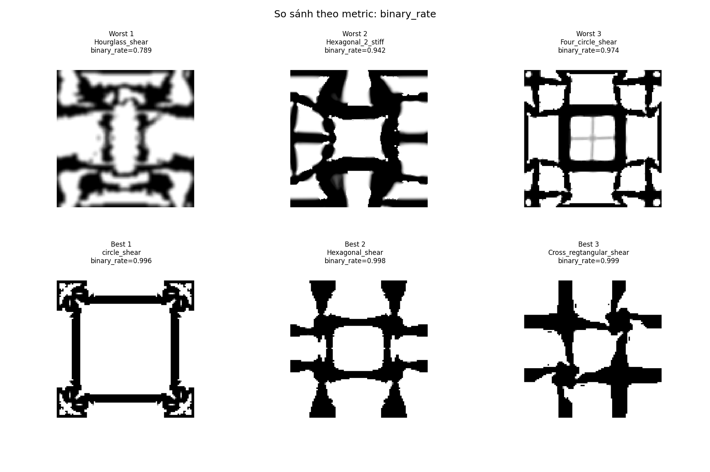
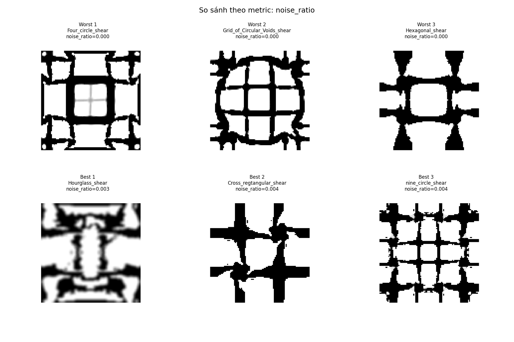
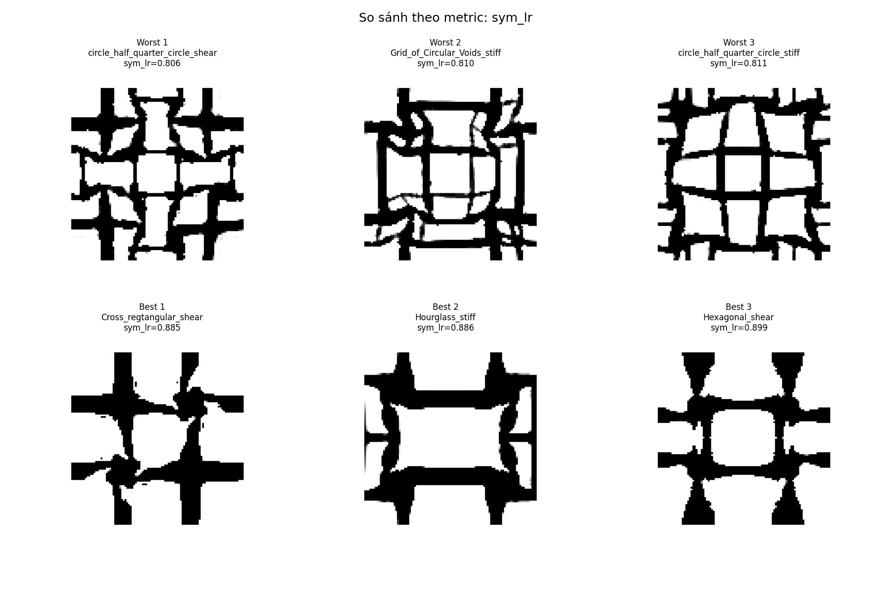
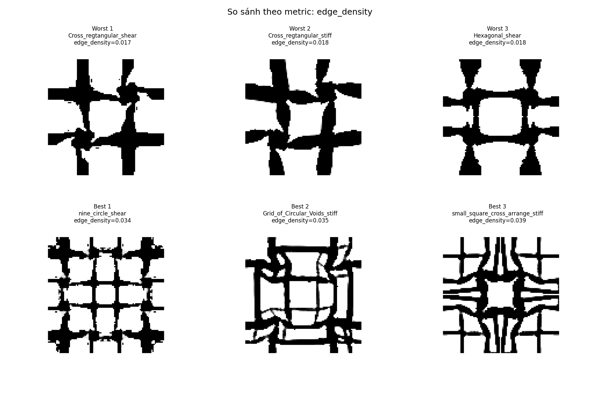
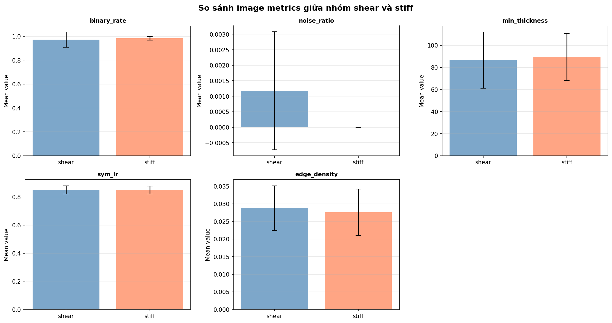

Tổng quan Bộ dữ liệu
Báo cáo này phân tích 20 thí nghiệm tối ưu hóa cấu trúc liên kết SIMP được thực hiện để thiết kế vi cấu trúc vật liệu tuần hoàn có tính chất auxetic (hệ số Poisson âm). Hai nhóm hàm mục tiêu - shear (suy giảm beta) và stiff (hàm phạt) - được thử nghiệm trên 10 mẫu hình dạng khởi tạo khác nhau đại diện cho các dạng hình học lỗ rỗng ban đầu.
| Hình dạng | Mục tiêu | #Lần lặp | ν₁₂ | ν₂₁ | Trạng thái |
|---|---|---|---|---|---|
| circle half quarter circle | shear | 52 | -0.6582 | -0.6582 | OK |
| Cross regtangular | shear | 51 | -0.4987 | -0.4987 | PARTIAL-aux |
| Cross regtangular | stiff | 39 | -0.5726 | -0.5726 | PARTIAL-aux |
| Four circle | shear | 63 | -0.6066 | -0.6066 | PARTIAL-aux |
| Four circle | stiff | 38 | -0.5089 | -0.5089 | PARTIAL-aux |
| Grid of Circular Voids | shear | 58 | -0.5861 | -0.5861 | PARTIAL-aux |
| Grid of Circular Voids | stiff | 38 | -0.6226 | -0.6226 | PARTIAL-aux |
| Hexagonal | shear | 37 | -0.6165 | -0.5002 | PARTIAL-aux |
| Hexagonal | stiff | 33 | -0.4544 | -0.7122 | PARTIAL-aux |
| Hourglass | shear | 55 | -0.5851 | -1.0023 | PARTIAL-aux |
| Hourglass | stiff | 32 | -0.4739 | -0.7267 | PARTIAL-aux |
| circle | shear | 72 | -0.5178 | -0.5178 | PARTIAL-aux |
| circle | stiff | 43 | -0.3365 | -0.3365 | PARTIAL-aux |
| circle half quarter circle | stiff | 39 | -0.6148 | -0.6148 | PARTIAL-aux |
| nine circle | shear | 50 | -0.4976 | -0.4976 | PARTIAL-aux |
| nine circle | stiff | 37 | -0.5707 | -0.5707 | PARTIAL-aux |
| small square cross | shear | 52 | -0.6689 | -0.6689 | PARTIAL-aux |
| small square cross arrange | stiff | 41 | -0.5465 | -0.5465 | PARTIAL-aux |
| square | shear | 41 | -0.6383 | -0.6383 | PARTIAL-aux |
| square | stiff | 26 | -0.3060 | -0.3060 | PARTIAL-aux |
First_Obj - Hàm mục tiêu Suy giảm Beta
c = Q(1,2) − βloop · (Q(1,1) + Q(2,2))
Second_Obj - Hàm mục tiêu Phạt
c = Q(1,2) + phạt nếu Q(1,1) hoặc Q(2,2) quá thấp
Nhận định chính
Nhóm shear liên tục tạo ra hành vi auxetic mạnh hơn (ν₁₂ trung bình = -0,587 so với -0,495) và chạy nhiều hơn 45% số lần lặp trung bình (53,1 so với 36,6). Cơ chế suy giảm beta dường như cho phép quá trình tối ưu khám phá tự do hơn trước khi kết thúc, trong khi ràng buộc phạt của nhóm stiff cắt đứt quá trình sớm.
Phân tích Hội tụ
Hội tụ được đánh giá bằng cách kiểm tra độ ổn định của chuỗi hệ số Poisson ν₁₂ và ν₂₁ trong 20 lần lặp cuối. Độ lệch chuẩn dưới 0,005 cho thấy hội tụ. Chỉ 1 trong 20 thí nghiệm - circle half quarter circle (shear) - đáp ứng tiêu chí này. 19 thí nghiệm còn lại cho thấy dao động liên tục, gợi ý rằng vòng lặp SIMP đã kết thúc trước khi ổn định hoàn toàn.
change < 0,01) đạt được trước khi vi cấu trúc ổn định.




Tại sao quá ít thí nghiệm hội tụ?
Vòng lặp SIMP kết thúc khi change < 0,01, trong đó change đo lường sự khác biệt mật độ tối đa giữa các lần lặp liên tiếp. Tuy nhiên, chỉ số này không được ghi lại trong đầu ra CSV, khiến việc tương quan giữa kết thúc và độ ổn định hệ số Poisson là không thể. Chuỗi hệ số Poisson tiếp tục dao động trong hầu hết các trường hợp, cho thấy thiết kế vẫn đang tiến hóa khi vòng lặp dừng.
Khuyến nghị
Ghi lại chỉ số change trong đầu ra CSV. Cân nhắc tăng số lần lặp tối đa hoặc nới lỏng dung sai hội tụ. Áp dụng đường tăng phạt dần dần (tương tự suy giảm beta) có thể giúp ổn định nhóm stiff.
Chỉ số Chất lượng Ảnh
Năm chỉ số đánh giá khả năng sản xuất và độ rõ nét của hình ảnh vi cấu trúc cuối cùng. Chất lượng tổng thể cao: tỷ lệ nhị phân trung bình > 0,97, nhiễu không đáng kể và độ dày thành phần vượt xa ngưỡng tối thiểu. Tuy nhiên, một ngoại lệ - Hourglass (shear) - cho thấy tỷ lệ nhị phân chỉ 0,789, cho thấy các pixel vùng xám đáng kể.
| Hình dạng | Mục tiêu | Tỷ lệ nhị phân | Nhiễu | Độ dày | Đối xứng (T-P) | Mật độ biên |
|---|---|---|---|---|---|---|
| Cross regtangular | shear | 0.999 | 0.004 | 140 | 0.885 | 0.017 |
| Four circle | shear | 0.974 | 0.000 | 80 | 0.839 | 0.033 |
| Grid of Circular Voids | shear | 0.988 | 0.000 | 76 | 0.820 | 0.030 |
| Hexagonal | shear | 0.998 | 0.000 | 88 | 0.899 | 0.018 |
| Hourglass | shear | 0.789 | 0.003 | 86 | 0.862 | 0.032 |
| circle | shear | 0.996 | 0.000 | 42 | 0.876 | 0.025 |
| circle half quarter circle | shear | 0.992 | 0.000 | 96 | 0.806 | 0.031 |
| nine circle | shear | 0.995 | 0.004 | 98 | 0.843 | 0.034 |
| small square cross | shear | 0.992 | 0.000 | 96 | 0.832 | 0.034 |
| square | shear | 0.989 | 0.000 | 64 | 0.842 | 0.033 |
| Cross regtangular | stiff | 0.994 | 0.000 | 124 | 0.882 | 0.018 |
| Four circle | stiff | 0.990 | 0.000 | 64 | 0.836 | 0.030 |
| Grid of Circular Voids | stiff | 0.978 | 0.000 | 70 | 0.810 | 0.035 |
| Hexagonal | stiff | 0.989 | 0.000 | 98 | 0.859 | 0.025 |
| Hexagonal 2 | stiff | 0.942 | 0.000 | 120 | 0.877 | 0.026 |
| Hourglass | stiff | 0.990 | 0.000 | 110 | 0.886 | 0.019 |
| circle | stiff | 0.984 | 0.000 | 88 | 0.871 | 0.021 |
| circle half quarter circle | stiff | 0.987 | 0.000 | 78 | 0.811 | 0.032 |
| nine circle | stiff | 0.991 | 0.000 | 76 | 0.834 | 0.030 |
| small square cross arrange | stiff | 0.984 | 0.000 | 66 | 0.818 | 0.039 |
| square | stiff | 0.975 | 0.000 | 88 | 0.856 | 0.029 |




Tỷ lệ nhị phân
Hourglass (shear) là ngoại lệ duy nhất. Tất cả khác > 0,94.
Đối xứng (T-P)
Đối xứng tốt nhìn chung, nhưng không có trường hợp nào vượt 0,90.
Mật độ biên
Biên sạch trên tất cả thí nghiệm.
So sánh Shear vs Stiff
So sánh hai nhóm hàm mục tiêu cho thấy sự đánh đổi rõ rệt giữa độ ổn định hội tụ và độ mạnh auxetic. Nhóm shear (suy giảm beta) tạo ra hành vi auxetic mạnh hơn trung bình và chạy nhiều lần lặp hơn trước khi kết thúc. Tuy nhiên, nhóm stiff (mục tiêu phạt) kết thúc sớm hơn, gợi ý rằng ràng buộc phạt có thể quá mạnh.

First_Obj - Suy giảm Beta
Hình dạng tốt nhất: small square cross (ν₁₂ = -0,6689). Duy nhất hội tụ: circle half quarter circle.
Second_Obj - Phạt
Hình dạng tốt nhất: Grid of Circular Voids (ν₁₂ = -0,6226). Không có trường hợp hội tụ.
Quan sát chính
Nhóm shear (mục tiêu suy giảm beta) tạo ra hành vi auxetic mạnh hơn trung bình và chạy nhiều hơn 45% số lần lặp trước khi kết thúc. Tuy nhiên, nhóm stiff (mục tiêu phạt) kết thúc sớm hơn, gợi ý ràng buộc phạt có thể quá mạnh, cắt đứt quá trình tối ưu sớm. Cơ chế suy giảm beta - nơi trọng số β giảm dần qua mỗi lần lặp - cho phép bộ tối ưu chuyển dần từ khám phá (ưu tiên shear) sang khai thác (ràng buộc độ cứng), tạo ra hội tụ ổn định hơn.
Khi nào dùng Mục tiêu Shear
Tốt nhất cho các ứng dụng nơi hiệu ứng auxetic tối đa là mục tiêu chính, như hấp thụ năng lượng, vật liệu siêu có hệ số Poisson âm, hoặc cấy ghép y sinh yêu cầu hành vi biến dạng bất thường.
Khi nào dùng Mục tiêu Stiff
Phù hợp hơn cho ứng dụng chịu tải nơi độ cứng phải được duy trì cùng với hành vi auxetic. Tuy nhiên, ngưỡng phạt cần được hiệu chỉnh để ngăn kết thúc sớm.
Kết luận & Khuyến nghị
Dựa trên phân tích 20 thí nghiệm SIMP, năm vấn đề quan trọng và các khuyến nghị tương ứng được xác định dưới đây. Những phát hiện này sẽ định hướng cho lần lặp tiếp theo của quy trình thí nghiệm.
Các vấn đề được ghi nhận
-
1. Tỷ lệ hội tụ thấp (95% chưa hội tụ)
Chỉ 1 trong 20 thí nghiệm đáp ứng tiêu chí ổn định. Vòng lặp SIMP kết thúc dựa trên
change < 0,01, nhưng chỉ số change này không được ghi lại trong đầu ra CSV. Chuỗi hệ số Poisson tiếp tục dao động trong hầu hết các trường hợp, cho thấy thiết kế vẫn đang tiến hóa. Khuyến nghị: Ghi lại chỉ sốchangetrong đầu ra CSV. Cân nhắc tăng số lần lặp tối đa hoặc nới lỏng dung sai hội tụ. Thực hiện tiêu chí dừng kép: cả thay đổi mật độ VÀ độ ổn định hệ số Poisson. - 2. Hourglass (shear) - Tỷ lệ nhị phân thấp (0,789) Hình dạng Hourglass với mục tiêu shear tạo ra các pixel vùng xám đáng kể, cho thấy nhị phân hóa kém. Điều này ảnh hưởng đến khả năng sản xuất và chất lượng dữ liệu huấn luyện cho AI tạo sinh. Khuyến nghị: Tăng tham số penal hoặc áp dụng ngưỡng Otsu như xử lý hậu kỳ. Cân nhắc các phép toán hình thái để làm sạch cấu trúc liên kết cuối cùng.
- 3. Thiếu dữ liệu độ cứng cắt (E1122) Đầu ra CSV hiện tại chỉ chứa số lần lặp, phần thể tích và hệ số Poisson. Chỉ số độ cứng cắt quan trọng E1122 không được ghi lại, khiến việc xếp hạng thí nghiệm theo mục tiêu chính là không thể. Khuyến nghị: Thêm các cột E1111, E2222 và E1122 vào xuất CSV trong MATLAB. Điều này cho phép đánh giá và xếp hạng hàm mục tiêu phù hợp.
- 4. Nhóm Stiff kết thúc quá sớm Hàm mục tiêu phạt trong nhóm stiff gây ra kết thúc sớm (trung bình 36,6 lần lặp so với 53,1 của shear). Điều này có thể cắt đứt quá trình tối ưu trước khi hội tụ. Khuyến nghị: Nới lỏng ngưỡng phạt hoặc sử dụng đường tăng phạt dần dần tương tự cách tiếp cận suy giảm beta. Cân nhắc tối ưu hai pha: đầu tiên tối đa hóa shear, sau đó thực thi độ cứng.
- 5. Điểm đối xứng dưới 0,90 Mặc dù tất cả thí nghiệm cho thấy đối xứng hợp lý (sym_lr > 0,80), không có trường hợp nào vượt 0,90. Điều này có thể cho thấy sự bất đối xứng số nhỏ trong bộ giải SIMP. Khuyến nghị: Thực thi ràng buộc đối xứng trong vòng lặp tối ưu hoặc áp dụng xử lý hậu kỳ đối xứng (trung bình với các phiên bản phản chiếu).
Quy trình Xử lý Hậu kỳ
Đối với các thí nghiệm được phân loại là OK hoặc PARTIAL-aux, các bước xử lý hậu kỳ sau được khuyến nghị trước khi sử dụng hình ảnh làm dữ liệu huấn luyện cho AI tạo sinh:
- Nhị phân hóa - Áp dụng ngưỡng Otsu để chuyển đổi thang xám sang nhị phân (0/1).
- Loại bỏ nhiễu - Loại bỏ các cụm pixel đơn lẻ nhỏ hơn 50 px bằng phép mở hình thái.
- Thực thi đối xứng - Lấy trung bình ảnh với các phiên bản lật trái-phải và trên-dưới.
- Kiểm tra PBC - Xác minh rằng các cạnh đối diện khớp nhau (tương thích điều kiện biên tuần hoàn).
Bước tiếp theo & Lộ trình
Dựa trên các phát hiện, một lộ trình theo giai đoạn được đề xuất để cải thiện quy trình SIMP, mở rộng bộ dữ liệu và cuối cùng xây dựng khả năng thiết kế ngược cho vi cấu trúc auxetic.
Ngay lập tức - Sửa Xuất Dữ liệu
Cập nhật mã MATLAB để xuất E1111, E2222, E1122 và chỉ số hội tụ change ra CSV. Chạy lại 20 thí nghiệm với đầu ra cải tiến để cho phép xếp hạng và phân tích phù hợp.
Ngắn hạn - Mở rộng lên 100+ Mẫu
Chạy xử lý hàng loạt với các tệp _update.m để tạo bộ dữ liệu lớn hơn với các tham số đa dạng (volfrac, rmin, beta, rotation). Điều này cung cấp đủ dữ liệu cho việc huấn luyện mô hình tạo sinh.
Trung hạn - Huấn luyện Mô hình Tạo sinh
Huấn luyện mô hình tạo sinh (VAE hoặc Diffusion) trên bộ dữ liệu đã làm sạch. Xác thực vi cấu trúc được tạo bằng FEA để xác nhận hành vi auxetic. Mục tiêu: > 90% tỷ lệ auxetic trên các thiết kế được tạo.
Dài hạn - Quy trình Thiết kế Ngược
Xây dựng quy trình thiết kế ngược: với các thuộc tính mục tiêu (ν₁₂, E1122), tạo ra vi cấu trúc đáp ứng các thông số kỹ thuật đó. Điều này cho phép thiết kế siêu vật liệu theo yêu cầu cho các ứng dụng kỹ thuật cụ thể.
Ngay lập tức
Sửa xuất CSV MATLAB để bao gồm các thành phần ten-xơ độ cứng và chỉ số hội tụ.
Ngắn hạn
Xử lý hàng loạt với các tham số đa dạng cho bộ dữ liệu 100+ mẫu.
Trung hạn
Huấn luyện mô hình VAE hoặc Diffusion trên vi cấu trúc đã làm sạch.
Dài hạn
Thiết kế ngược: thuộc tính mục tiêu → tạo vi cấu trúc.